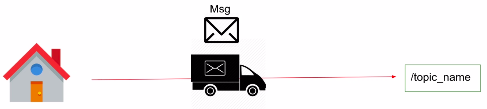
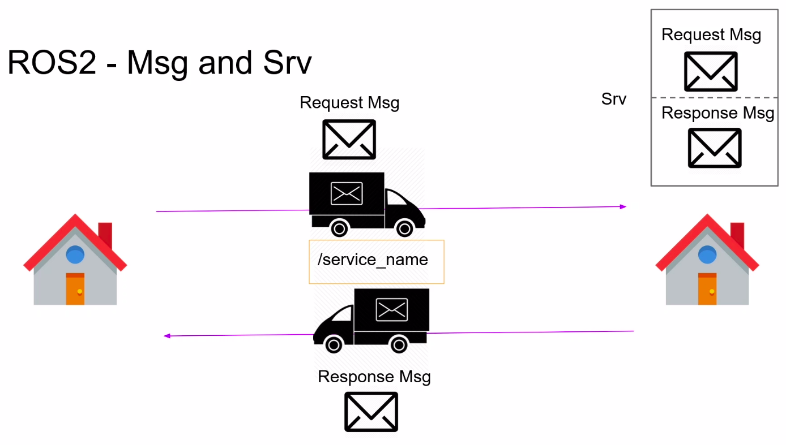
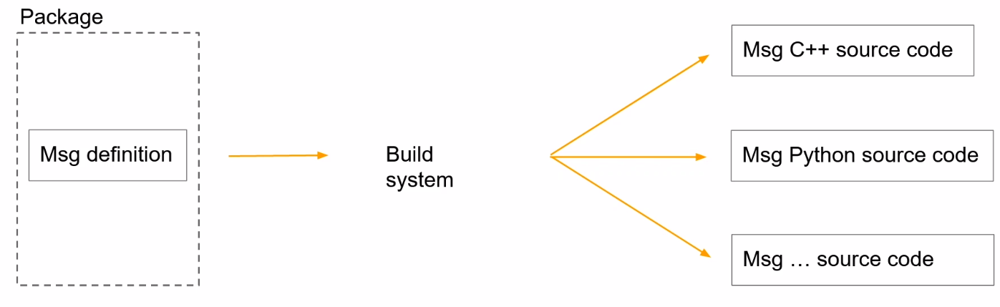
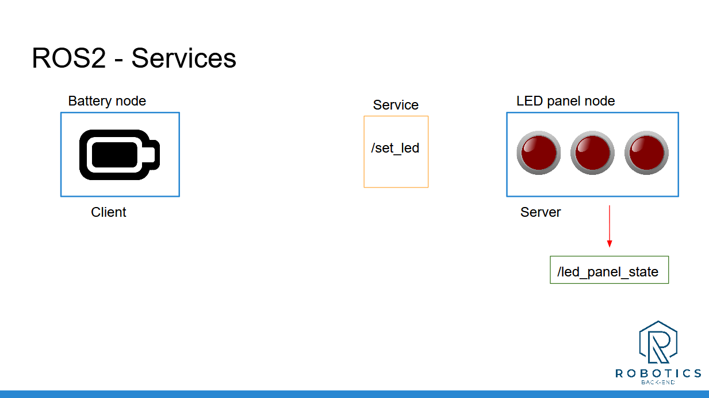
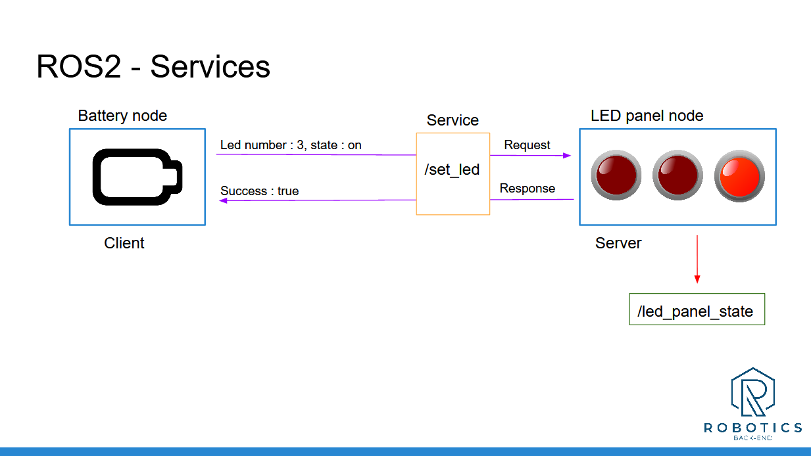
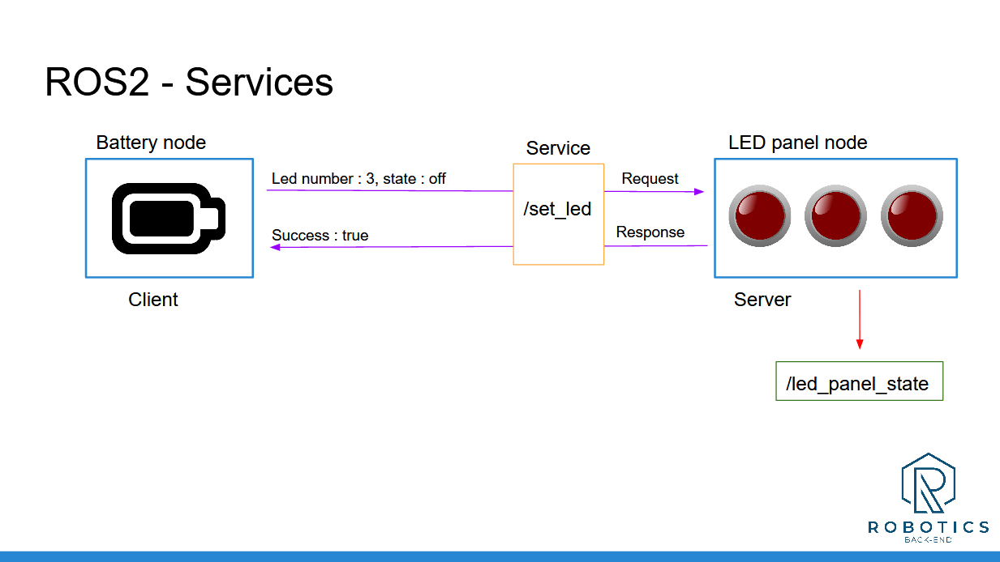

Custom Interfaces & Parameters — Your Own Messages, Your Own Knobs
AddTwoInts, SetBool, RotateAbsolute. A real robot needs its own: a car's vehicle status, a list of detected pedestrians, a "set driving mode" service. Those are custom interfaces. And the same code must run in the city and on the motorway with different settings, without being edited. Those settings are parameters. Today you build both.🗺️ Today's route
5.0The big picture 5.1Custom interfaces, step by step Lab 1Your interfaces package + a .msg Lab 2Publish your own message Lab 3Richer messages: a self-driving car Lab 4Your own .srv and .action 5.2Your turn: battery + LED panel 5.3Parameters, step by step Lab 5Add parameters to a node Lab 6Parameter tools & YAML files Lab 7Change parameters while running 5.4Your turn: parameters 5.5When things go wrong 5.6Exit ticket & homework5.0The big picture: what robots say, and how they are tuned
Lectures 3 and 4 gave you the ways nodes talk: topics, services and actions. Today is about what they say, and about the settings each node runs with. Six small steps first, no code.
See it: borrow a form, design a form, turn a knob
- Already exists:
LaserScan,Image,Twist,Odometry - Everyone's tools understand it (RViz, Nav2)
- Always check here first
- Your own
.msg,.srvor.actionfile - Lives in its own interfaces package
colcon buildturns it into Python and C++
- A named, typed setting of one node
- Set at startup (
-p, YAML) or while running - e.g. max speed, camera fps, robot name
A real robot: the self-driving car again
Remember the car from Lecture 4: every sensor is a node, and the onboard computer runs dozens more. Look at it again and ask two new questions: what type is each message? and which numbers must be adjustable?

- LIDAR →
sensor_msgs/PointCloud2 - Camera →
sensor_msgs/Image - GPS →
sensor_msgs/NavSatFix - Wheels →
nav_msgs/Odometry - Steering →
geometry_msgs/Twist
VehicleStatus.msg: speed, gear, batteryDetectedObject.msg: "pedestrian, 8 m ahead"SetDrivingMode.srv: "sport" → "OK"ParkCar.action: "bay 7" → "0.5 m left" → "parked"
- Planner:
max_speed,safe_distance - Camera:
fps,exposure - LIDAR:
frame_id,min_range - Every node:
use_sim_time
Autoware, the open-source self-driving software, keeps its own interface packages (for example autoware_perception_msgs, autoware_vehicle_msgs) and configures every node from YAML parameter files. Nav2 ships nav2_msgs and a parameter file with hundreds of settings. Your LIMO robot has one too: limo_msgs/msg/LimoStatus (battery voltage, control mode, error code). Today you learn the same two skills on a small scale.
Feel the difference: a scribbled note vs a proper form
The perception node tells the planner what it sees. Many beginners pack everything into one String like "car,0.92,12.5". Try it, then let a teammate change the order. Finally give the two nodes different types and watch what ROS 2 does.
Compare: three interface files and one parameter
Every row is explained step by step in 5.1 (interfaces) and 5.3 (parameters).
| .msg 📨 | .srv 🛎️ | .action 🎯 | Parameter 🎛️ | |
|---|---|---|---|---|
| What it is | The content of a topic | Request + response | Goal + result + feedback | A setting of one node |
| Separators | none | one --- | two --- | – |
| Where it lives | my_robot_interfaces/msg, /srv, /action: a CMake package | Inside the node's code: declare_parameter | ||
| When it changes | When you edit the file and rebuild | Every run (-p, YAML), or live (ros2 param set) | ||
| Python | from …msg import X | from …srv import X | from …action import X | self.get_parameter("name").value |
| Terminal | ros2 interface show my_robot_interfaces/msg/X | ros2 param list / get / set | ||
| Car example | VehicleStatus | SetDrivingMode | ParkCar | max_speed: 50.0 |
Choose: what do I need?
(a number, a name, a mode)?"} -- yes --> P["🎛️ Parameter"] Q0 -- "no, it's data sent between nodes" --> Q1{"Does a standard interface fit?
(ros2 interface list)"} Q1 -- yes --> R["📦 Reuse it:
std_msgs, geometry_msgs,
sensor_msgs, nav_msgs"] Q1 -- no --> Q2{"How is it sent?
(Lecture 4)"} Q2 -- "a stream" --> M["📨 your .msg"] Q2 -- "a quick question" --> S["🛎️ your .srv"] Q2 -- "a long job" --> A["🎯 your .action"]
Check yourself 5 min
The car's camera sends images. Do you write a custom message for them?
Answer
sensor_msgs/msg/Image already exists, and every tool (RViz, rqt, OpenCV bridges) understands it. Reuse before you create.In the "scribbled note" simulator, why did the planner crash when the teammate changed the order?
Answer
String has no named fields, so the planner guessed "the 3rd item is the distance". With a custom message, msg.distance_m is always the distance, whatever order it was filled in.The perception node sends DetectedObject; the planner subscribes with String. What happens?
Answer
ros2 topic info would show two types on one topic.The same planner runs in a city (max 50 km/h) and on a motorway (max 110 km/h). Two programs?
Answer
max_speed, started with a different value (or YAML file) in each place."Park in bay 7, tell me the distance left, let me cancel." Which file would you write?
Answer
.action: goal (bay number) --- result --- feedback (distance left). Same shape as RotateAbsolute from Lecture 4.- The car's speed, gear and battery, 20 times per second
- "Switch to sport mode", answer "OK"
- "Park in bay 7", with distance left
- Maximum speed allowed in the city: 50 km/h
- The list of pedestrians the camera sees
- The LiDAR's frame name,
lidar_top - Camera frames per second
- Drive 100 m forward, cancellable
- Turn LED 3 on
- The robot's name, "R2D2"
5.1Custom interfaces, step by step
Picture it: a printed form, not a scribbled note
An interface is a printed form with labelled boxes. The topic is the post box; the interface is the form you post. Everyone agrees that the box called distance_m holds a decimal number in metres. A scribbled note ("car 0.92 12.5") might be understood today, and misread tomorrow.
The rules of an interface
- A topic is identified by a name (
/hardware_status) and a type (my_robot_interfaces/msg/HardwareStatus). A service and an action too. Both sides must use the same type. - Topics, services and actions are the communication layer; interfaces are the content.
- One field per line:
type name. Comments start with#. - Interfaces live in their own package (here
my_robot_interfaces), which must be a CMake package, so both Python and C++ packages can use them.
Field types you can use
| You write | Meaning | In Python | Robot example |
|---|---|---|---|
bool | true / false | bool | bool autopilot_on |
int8 … int64, uint8 … uint64 | whole number (u = never negative) | int | uint8 gear, int64 temperature |
float32, float64 | decimal number | float | float64 speed_kmh |
string | text | str | string label |
TYPE[] | a list of any length | list (or array) | int64[] led_states |
TYPE[3] · TYPE[<=10] | exactly 3 · at most 10 items | list | float64[3] rgb |
pkg/Msg or Msg | another message inside yours | nested object | std_msgs/Header header, DetectedObject[] objects |
- File names: CamelCase, starting with a capital, no underscores:
HardwareStatus.msg✔hardware_status.msg✘ - Field names: snake_case, lower case, starting with a letter:
are_motors_ready✔AreMotorsReady✘_speed✘ - Constants: UPPER_CASE with a value:
uint8 PEDESTRIAN=1
Watch it: from a text file to code in every language
You write a few lines of text. colcon build runs the rosidl code generators, which write a Python class, a C++ struct and the network description for you. That is why a Python node and a C++ node can exchange your message without any extra work.

.msg is the content carried by a topic.
.srv is a request message plus a response message.
Try it: design your own interface
Pick a preset (the three marked car are today's self-driving examples), add or rename fields, and watch the file, the CMakeLists.txt line and the Python code update. Break a naming rule on purpose and read the warning.
Remember it: tap a card to check yourself
.msg), service (.srv) or action (.action).type name.--- response.--- result --- feedback.colcon build.uint8 PEDESTRIAN=1: a fixed, named value. In Python: DetectedObject.PEDESTRIAN.✅ You have the idea. Now build it: Lab 1 creates the package, Lab 2 publishes your message, Lab 3 builds richer car messages, Lab 4 adds your own service and action.
L1Lab 1 — Your interfaces package + a .msg
my_robot_interfaces with HardwareStatus.msg
Goal: ros2 interface show my_robot_interfaces/msg/HardwareStatus prints your three fields.
Interfaces live in their own package so that every other package, Python or C++, can depend on them. It must be a CMake package, which is the default for ros2 pkg create. We delete the folders we don't need and make one for each kind of interface.
cd ~/ros2_ws/src
ros2 pkg create my_robot_interfaces
cd my_robot_interfaces
rm -rf include/ src/
mkdir msg srv action
lsaction CMakeLists.txt msg package.xml srv
A robot reports its hardware health once a second: motor temperature, whether the motors are ready, and a short text for humans.
int64 temperature
bool are_motors_ready
string debug_messagepackage.xml: add the 3 highlighted lines <buildtool_depend>ament_cmake</buildtool_depend>
<buildtool_depend>rosidl_default_generators</buildtool_depend>
<exec_depend>rosidl_default_runtime</exec_depend>
<member_of_group>rosidl_interface_packages</member_of_group>
<test_depend>ament_lint_auto</test_depend>Line 1: "use the code generators to build me". Line 2: "my users need the runtime library to run". Line 3: "I am an interface package".
CMakeLists.txt: replace everything with thiscmake_minimum_required(VERSION 3.8)
project(my_robot_interfaces)
find_package(ament_cmake REQUIRED)
find_package(rosidl_default_generators REQUIRED)
rosidl_generate_interfaces(${PROJECT_NAME}
"msg/HardwareStatus.msg"
)
ament_export_dependencies(rosidl_default_runtime)
ament_package()From now on, every new .msg, .srv or .action file gets one line inside rosidl_generate_interfaces( … ). Forgetting that line is the most common mistake of the day.
cd ~/ros2_ws
colcon build --packages-select my_robot_interfaces
source ~/.bashrc
ros2 interface show my_robot_interfaces/msg/HardwareStatus
ros2 interface proto my_robot_interfaces/msg/HardwareStatusint64 temperature bool are_motors_ready string debug_message "temperature: 0 are_motors_ready: false debug_message: '' "
show prints the definition. proto prints an empty example you can copy into a terminal command. Every field starts at zero, false or an empty string.
ros2 pkg create my_robot_interfaces- Delete
include/andsrc/; createmsg/,srv/,action/ - Write
msg/HardwareStatus.msg - Add the 3 lines to
package.xml - Add
"msg/HardwareStatus.msg"torosidl_generate_interfacesinCMakeLists.txt colcon build --packages-select my_robot_interfacessource ~/.bashrcros2 interface show my_robot_interfaces/msg/HardwareStatus
L2Lab 2 — Publish your own message
The hardware status publisher
Goal: a node in my_py_pkg publishes HardwareStatus on /hardware_status once a second, exactly like the number publisher from Lecture 3, but with your own type.
my_py_pkg that it uses your interfaces <depend>rclpy</depend>
<depend>example_interfaces</depend>
<depend>my_robot_interfaces</depend>This also tells colcon to build my_robot_interfaces before my_py_pkg.
cd ~/ros2_ws/src/my_py_pkg/my_py_pkg
touch hw_status_publisher.py && chmod +x hw_status_publisher.py#!/usr/bin/env python3
import rclpy
from rclpy.node import Node
from my_robot_interfaces.msg import HardwareStatus
class HardwareStatusPublisherNode(Node):
def __init__(self):
super().__init__("hardware_status_publisher")
self.hw_status_publisher_ = self.create_publisher(
HardwareStatus, "hardware_status", 10)
self.timer_ = self.create_timer(1.0, self.publish_hw_status)
self.get_logger().info("Hardware status publisher has been started")
def publish_hw_status(self):
msg = HardwareStatus()
msg.temperature = 45
msg.are_motors_ready = True
msg.debug_message = "Nothing special here"
self.hw_status_publisher_.publish(msg)
def main(args=None):
rclpy.init(args=args)
node = HardwareStatusPublisherNode()
rclpy.spin(node)
rclpy.shutdown()
if __name__ == "__main__":
main()# setup.py: "hw_status_publisher = my_py_pkg.hw_status_publisher:main",
cd ~/ros2_ws && colcon build --symlink-install && source ~/.bashrc
ros2 run my_py_pkg hw_status_publisherros2 topic info /hardware_status
ros2 topic echo /hardware_statusType: my_robot_interfaces/msg/HardwareStatus Publisher count: 1 Subscription count: 0 temperature: 45 are_motors_ready: true debug_message: Nothing special here ---
We ran colcon build without --packages-select, so it builds all packages in the right order: interfaces first, then the Python package that needs them.
Keep the echo running in Terminal 2. Pretend a motor is overheating:
ros2 topic pub --once /hardware_status my_robot_interfaces/msg/HardwareStatus \
"{temperature: 92, are_motors_ready: false, debug_message: 'Motor 2 overheating'}"Your message appears among the node's messages in Terminal 2. Every ros2 tool you know already works with your own types.
L3Lab 3 — Richer messages: a self-driving car
DetectedObject.msg and DetectedObjectArray.msg
Goal: the message a real perception system sends: a time stamp and frame, a named object class, a confidence, a 3D position, and a list of many objects. You use four new tools: comments, constants, default values and messages inside messages.
# One object seen by the car's perception system
std_msgs/Header header
uint8 CAR=0
uint8 PEDESTRIAN=1
uint8 CYCLIST=2
uint8 TRAFFIC_LIGHT=3
uint8 type
string label
float32 confidence
geometry_msgs/Point position
float64 distance_m 0.0std_msgs/Header header
DetectedObject[] objectsA message from the same package needs no package name: just DetectedObject. The [] makes it a list of any length, from zero objects on an empty road to fifty in a busy street.
Your messages now use std_msgs and geometry_msgs. CMake must find them, the generator must know about them, and package.xml must list them.
find_package(ament_cmake REQUIRED)
find_package(rosidl_default_generators REQUIRED)
find_package(std_msgs REQUIRED)
find_package(geometry_msgs REQUIRED)
rosidl_generate_interfaces(${PROJECT_NAME}
"msg/HardwareStatus.msg"
"msg/DetectedObject.msg"
"msg/DetectedObjectArray.msg"
DEPENDENCIES std_msgs geometry_msgs
) <depend>std_msgs</depend>
<depend>geometry_msgs</depend>cd ~/ros2_ws && colcon build --packages-select my_robot_interfaces && source ~/.bashrc
ros2 interface show my_robot_interfaces/msg/DetectedObjectArraystd_msgs/Header header builtin_interfaces/Time stamp int32 sec uint32 nanosec string frame_id DetectedObject[] objects std_msgs/Header header ... uint8 CAR=0 uint8 PEDESTRIAN=1 ... geometry_msgs/Point position float64 x float64 y float64 z float64 distance_m 0.0
ROS 2 opens every nested message for you, all the way down to plain numbers.
from my_robot_interfaces.msg import DetectedObject, DetectedObjectArray
obj = DetectedObject()
obj.header.stamp = self.get_clock().now().to_msg() # when
obj.header.frame_id = "camera_front" # which sensor
obj.type = DetectedObject.PEDESTRIAN # a constant, not a magic 1
obj.label = "pedestrian"
obj.confidence = 0.87
obj.position.x = 8.0 # 8 m ahead
obj.distance_m = 8.0
msg = DetectedObjectArray()
msg.header = obj.header
msg.objects = [obj] # a Python list
self.objects_publisher_.publish(msg)The LIMO driver publishes its health on /limo_status with a custom message from the limo_msgs package. You will see it again in Part B:
std_msgs/Header header
uint8 vehicle_state
uint8 control_mode
float64 battery_voltage
uint16 error_code
uint8 motion_modeIts CMakeLists.txt has the same DEPENDENCIES std_msgs line you just wrote.
L4Lab 4 — Your own .srv and .action
SetDrivingMode.srv and DriveDistance.action
Goal: a service the car's dashboard calls to change the driving mode, served by your own node, plus your first .action type. Use your Lecture 4 server as a model: only the type changes.
# Request: one of "manual", "eco", "sport", "autopilot"
string mode
---
# Response
bool success
string message "msg/DetectedObjectArray.msg"
"srv/SetDrivingMode.srv"
DEPENDENCIES std_msgs geometry_msgscd ~/ros2_ws && colcon build --packages-select my_robot_interfaces && source ~/.bashrc
ros2 interface show my_robot_interfaces/srv/SetDrivingMode
ros2 interface package my_robot_interfacesmy_robot_interfaces/msg/HardwareStatus my_robot_interfaces/msg/DetectedObject my_robot_interfaces/msg/DetectedObjectArray my_robot_interfaces/srv/SetDrivingMode
#!/usr/bin/env python3
import rclpy
from rclpy.node import Node
from my_robot_interfaces.srv import SetDrivingMode
MODES = ["manual", "eco", "sport", "autopilot"]
class DrivingModeServerNode(Node):
def __init__(self):
super().__init__("driving_mode_server")
self.mode_ = "manual"
self.server_ = self.create_service(
SetDrivingMode, "set_driving_mode", self.callback_set_driving_mode)
self.get_logger().info("Driving mode server started in mode: manual")
def callback_set_driving_mode(self, request, response):
if request.mode not in MODES:
response.success = False
response.message = f"Unknown mode '{request.mode}'. Use one of {MODES}"
return response
self.mode_ = request.mode
response.success = True
response.message = f"Driving mode is now {self.mode_}"
self.get_logger().info(response.message)
return response
def main(args=None):
rclpy.init(args=args)
node = DrivingModeServerNode()
rclpy.spin(node)
rclpy.shutdown()
if __name__ == "__main__":
main()# setup.py: "driving_mode_server = my_py_pkg.driving_mode_server:main",
cd ~/ros2_ws && colcon build --packages-select my_py_pkg --symlink-install && source ~/.bashrc
ros2 run my_py_pkg driving_mode_server
ros2 service call /set_driving_mode my_robot_interfaces/srv/SetDrivingMode "{mode: 'sport'}"
ros2 service call /set_driving_mode my_robot_interfaces/srv/SetDrivingMode "{mode: 'turbo'}"response: my_robot_interfaces.srv.SetDrivingMode_Response(success=True, message='Driving mode is now sport') response: my_robot_interfaces.srv.SetDrivingMode_Response(success=False, message="Unknown mode 'turbo'. Use one of ['manual', 'eco', 'sport', 'autopilot']")
In Lecture 4 you used RotateAbsolute. Now write your own: "drive this far at this speed, tell me how much is left".
# Goal
float64 distance_m
float64 speed_mps
---
# Result
float64 travelled_m
---
# Feedback
float64 remaining_m "action/DriveDistance.action"
<depend>action_msgs</depend> <!-- package.xml: actions need it -->cd ~/ros2_ws && colcon build --packages-select my_robot_interfaces && source ~/.bashrc
ros2 interface show my_robot_interfaces/action/DriveDistanceSame order as Lecture 4: goal --- result --- feedback. The server is in the box below.
➕ Going further (optional): the DriveDistance action server
The Fibonacci server from Lecture 4, with your own type. It "drives" in half-second steps, publishes the distance left as feedback, rejects silly goals and accepts cancel requests.
#!/usr/bin/env python3
import time
import rclpy
from rclpy.node import Node
from rclpy.action import ActionServer, CancelResponse, GoalResponse
from rclpy.callback_groups import ReentrantCallbackGroup
from rclpy.executors import MultiThreadedExecutor
from my_robot_interfaces.action import DriveDistance
class DriveDistanceServerNode(Node):
def __init__(self):
super().__init__("drive_distance_server")
self.server_ = ActionServer(
self, DriveDistance, "drive_distance",
execute_callback=self.callback_execute,
goal_callback=self.callback_goal,
cancel_callback=self.callback_cancel,
callback_group=ReentrantCallbackGroup())
self.get_logger().info("Drive distance action server has been started")
def callback_goal(self, goal_request):
if goal_request.distance_m <= 0.0 or goal_request.speed_mps <= 0.0:
self.get_logger().warn("Rejecting goal: distance and speed must be > 0")
return GoalResponse.REJECT
return GoalResponse.ACCEPT
def callback_cancel(self, goal_handle):
return CancelResponse.ACCEPT
def callback_execute(self, goal_handle):
goal = goal_handle.request
feedback = DriveDistance.Feedback()
travelled = 0.0
step = goal.speed_mps * 0.5 # metres covered every 0.5 s
while travelled < goal.distance_m:
if goal_handle.is_cancel_requested:
goal_handle.canceled()
return DriveDistance.Result(travelled_m=travelled)
travelled = min(goal.distance_m, travelled + step)
feedback.remaining_m = goal.distance_m - travelled
goal_handle.publish_feedback(feedback)
time.sleep(0.5)
goal_handle.succeed()
return DriveDistance.Result(travelled_m=travelled)
def main(args=None):
rclpy.init(args=args)
node = DriveDistanceServerNode()
rclpy.spin(node, executor=MultiThreadedExecutor())
rclpy.shutdown()
if __name__ == "__main__":
main()# setup.py: "drive_distance_server = my_py_pkg.drive_distance_server:main",
ros2 run my_py_pkg drive_distance_server
ros2 action send_goal /drive_distance my_robot_interfaces/action/DriveDistance "{distance_m: 5.0, speed_mps: 1.0}" --feedbackFeedback:
remaining_m: 0.5
Feedback:
remaining_m: 0.0
Result:
travelled_m: 5.0
Goal finished with status: SUCCEEDEDThen try {distance_m: -2.0, speed_mps: 1.0} (rejected) and stop a long goal with Ctrl+C (canceled). Write an action client for it by copying your Lab 6 client from Lecture 4 and changing only the type, the name and the field names.
5.2Your turn: the battery and the LED panel
The battery and the LED panel
In Lecture 4 you saw this picture: the battery asks the LED panel to turn LED 3 on. Today you build it, with your own message and service.



{led_number: 3, state: 1}" .-> S{{"/set_led"}} -.-> P(["led_panel"]) P -- "LedStateArray" --> T[["/led_states"]]
- Fake the battery: it starts full. After 4 s it becomes empty, and after 6 more seconds it is full again. Repeat forever.
- LED panel: an array
[0, 0, 0]. It publishes the array on/led_statesand offers the service/set_led. - You need:
msg/LedStateArray.msg,srv/SetLed.srv, the nodeled_panel.pyand the nodebattery.py.
Suggested order: ① the msg + a panel that publishes; test with echo → ② the srv + the panel's server; test with ros2 service call → ③ the battery client.
Hint 1: the two interface files
int64[] led_statesint64 led_number
int64 state
---
bool successAdd both to rosidl_generate_interfaces and rebuild the interfaces package.
Hint 2: measuring time in the battery node
self.get_clock().now().nanoseconds / 1e9 gives the current time in seconds.Solution: led_panel.py
#!/usr/bin/env python3
import rclpy
from rclpy.node import Node
from my_robot_interfaces.msg import LedStateArray
from my_robot_interfaces.srv import SetLed
class LedPanelNode(Node):
def __init__(self):
super().__init__("led_panel")
self.led_states_ = [0, 0, 0]
self.led_states_publisher_ = self.create_publisher(LedStateArray, "led_states", 10)
self.led_states_timer_ = self.create_timer(4.0, self.publish_led_states)
self.set_led_service_ = self.create_service(SetLed, "set_led", self.callback_set_led)
self.get_logger().info("LED panel node has been started")
def publish_led_states(self):
msg = LedStateArray()
msg.led_states = self.led_states_
self.led_states_publisher_.publish(msg)
def callback_set_led(self, request, response):
led_number = request.led_number
state = request.state
if led_number > len(self.led_states_) or led_number <= 0:
response.success = False
return response
if state not in [0, 1]:
response.success = False
return response
self.led_states_[led_number - 1] = state
response.success = True
self.publish_led_states() # publish the change straight away
return response
def main(args=None):
rclpy.init(args=args)
rclpy.spin(LedPanelNode())
rclpy.shutdown()
if __name__ == "__main__":
main()Solution: battery.py
#!/usr/bin/env python3
from functools import partial
import rclpy
from rclpy.node import Node
from my_robot_interfaces.srv import SetLed
class BatteryNode(Node):
def __init__(self):
super().__init__("battery")
self.battery_state_ = "full"
self.last_change_ = self.now_seconds()
self.set_led_client_ = self.create_client(SetLed, "set_led")
self.battery_timer_ = self.create_timer(0.1, self.check_battery_state)
self.get_logger().info("Battery node has been started")
def now_seconds(self):
return self.get_clock().now().nanoseconds / 1e9
def check_battery_state(self):
time_now = self.now_seconds()
if self.battery_state_ == "full" and time_now - self.last_change_ > 4.0:
self.battery_state_ = "empty"
self.get_logger().info("Battery is empty! Charging battery...")
self.last_change_ = time_now
self.call_set_led_server(3, 1)
elif self.battery_state_ == "empty" and time_now - self.last_change_ > 6.0:
self.battery_state_ = "full"
self.get_logger().info("Battery is now full again.")
self.last_change_ = time_now
self.call_set_led_server(3, 0)
def call_set_led_server(self, led_number, state):
if not self.set_led_client_.service_is_ready():
self.get_logger().warn("LED panel not available")
return
request = SetLed.Request()
request.led_number = led_number
request.state = state
future = self.set_led_client_.call_async(request)
future.add_done_callback(partial(self.callback_set_led, led_number=led_number, state=state))
def callback_set_led(self, future, led_number, state):
try:
self.get_logger().info(f"LED {led_number} -> {state}: success={future.result().success}")
except Exception as e:
self.get_logger().error(f"Service call failed {e!r}")
def main(args=None):
rclpy.init(args=args)
rclpy.spin(BatteryNode())
rclpy.shutdown()
if __name__ == "__main__":
main()# setup.py: "led_panel = my_py_pkg.led_panel:main", "battery = my_py_pkg.battery:main",
cd ~/ros2_ws && colcon build --symlink-install && source ~/.bashrc
ros2 run my_py_pkg led_panel # terminal 1
ros2 topic echo /led_states # terminal 2
ros2 run my_py_pkg battery # terminal 3Why service_is_ready() instead of the while … wait_for_service loop? Because this call happens inside a timer callback, where a blocking loop would freeze the node (Lecture 4, "When things go wrong").
- Create
srv/SetLed.srv - Add
"srv/SetLed.srv"torosidl_generate_interfaces colcon build --packages-select my_robot_interfacessource ~/.bashrcand check withros2 interface showfrom my_robot_interfaces.srv import SetLedin the nodecolcon build --packages-select my_py_pkgand run the node
5.3Parameters, step by step
Why: hard-coded numbers don't survive the real world
Look at the nodes you wrote: self.number_ = 2, create_timer(0.5, …), self.robot_name_ = "LIMO". To change any of them you edit the code (and for C++, recompile). Now imagine the self-driving car: the cruise-control code is the same in Lahore traffic, on the M2 motorway and in a car park, but the maximum speed and following distance are not. You don't want three copies of the code. You want one program with knobs.
Picture it: the settings menu of a car
Parameters are the settings menu of a car. The engine and the software (the code) are the same in every car of the model. The owner picks eco or sport mode, sets the speed limiter, chooses the cruise-control distance (the parameters). The factory sets defaults; you can change them before you drive, and some even while you drive.
A parameter's value can come from three places. The later one wins:
declare_parameter("max_speed", 50.0)max_speed = 50.0
--ros-args -p max_speed:=110.0--params-file motorway.yamlmax_speed = 110.0
ros2 param set /adaptive_cruise max_speed 90.0max_speed = 90.0 only used if the node listens: Lab 7

The rules of a parameter
- A parameter belongs to one node. Two nodes can each have a
max_speed; they are different parameters. - It has a name, a type and a value. Types:
bool,int,double,string, and lists of each (plusbyte[]). - A node must declare it before using it, with a default value. The default fixes the type:
2is an int,2.0is a double. - It is set at startup (
-p, YAML) or while running (ros2 param set). The node reads it withget_parameter("name").value. - Under the hood, every node offers parameter services (
/node/get_parameters,/node/set_parameters, …). You'll list them in Lab 6: parameters are built on the services you learned in Lecture 4.
Try it: tune the adaptive cruise control
Your car follows another car. max_speed, safe_distance and driving_mode are parameters of the adaptive_cruise node. Change them while it drives, restart it with a different YAML file, and find out why a parameter callback matters.
Remember it
("name", default): the default also fixes the type.--ros-args -p name:=value: set at startup.node_name: → ros__parameters: → name: value. Load with --params-file.add_on_set_parameters_callback: react to, or refuse, a change.✅ Now use it: Lab 5 adds parameters to your nodes, Lab 6 uses the tools and YAML files, Lab 7 reacts to changes while the node runs.
L5Lab 5 — Add parameters to a node
number_publisher with two knobs
Goal: one number_publisher program that publishes any number at any rate, chosen when you start it.
ros2 run my_py_pkg number_publisher
ros2 param list/number_publisher: use_sim_time
use_sim_time is on every node. It tells the node to follow the simulator's clock instead of the computer's; you'll set it with Gazebo in Lecture 8.
Open number_publisher.py from Lecture 3 and change it like this:
#!/usr/bin/env python3
import rclpy
from rclpy.node import Node
from example_interfaces.msg import Int64
class NumberPublisherNode(Node):
def __init__(self):
super().__init__("number_publisher")
self.declare_parameter("number_to_publish", 2)
self.declare_parameter("publish_frequency", 2.0)
self.number_ = self.get_parameter("number_to_publish").value
self.publish_frequency_ = self.get_parameter("publish_frequency").value
self.number_publisher_ = self.create_publisher(Int64, "number", 10)
self.number_timer_ = self.create_timer(
1.0 / self.publish_frequency_, self.publish_number)
self.get_logger().info("Number publisher has been started")
def publish_number(self):
msg = Int64()
msg.data = self.number_
self.number_publisher_.publish(msg)
def main(args=None):
rclpy.init(args=args)
node = NumberPublisherNode()
rclpy.spin(node)
rclpy.shutdown()
if __name__ == "__main__":
main()Some older tutorials write declare_parameter("number_to_publish") without a default. On Humble this creates a parameter with no type that fails later in confusing ways. Always write declare_parameter("name", default).
-pWith --symlink-install from Lecture 2 you don't need to rebuild after editing Python. Stop the old node and start it again:
ros2 run my_py_pkg number_publisher --ros-args -p number_to_publish:=5 -p publish_frequency:=4.0ros2 param get /number_publisher number_to_publish
ros2 topic echo /number --once
ros2 topic hz /numberInteger value is: 5 data: 5 --- average rate: 4.000
Same code, different behaviour. Now try -p number_to_publish:=hello and read the error: the type was fixed by the default value. And try -p numbr_to_publish:=5 (typo): no error at all, the value is silently ignored. Remember that one.
In robot_news_station.py (Lecture 3), replace the fixed name with a parameter:
self.declare_parameter("robot_name", "LIMO")
self.robot_name_ = self.get_parameter("robot_name").valueros2 run my_py_pkg robot_news_station --ros-args -r __node:=station_a -p robot_name:=R2D2
ros2 run my_py_pkg robot_news_station --ros-args -r __node:=station_b -p robot_name:=C3PO
ros2 topic echo /robot_newsdata: Hi, this is R2D2 from the robot news station. --- data: Hi, this is C3PO from the robot news station. ---
One program, two robots. We renamed the nodes with -r __node:= because two nodes must never share a name.
L6Lab 6 — Parameter tools & YAML files
Read, change, save and load settings
Goal: change turtlesim's colour while it runs, save all its settings to a file, start it again from that file, and see the services behind it all.
ros2 run turtlesim turtlesim_node in Terminal 1)ros2 param list /turtlesim
ros2 param describe /turtlesim background_r
ros2 param set /turtlesim background_r 150
ros2 param set /turtlesim background_g 0 background_b
background_g
background_r
...
use_sim_time
Parameter name: background_r
Type: integer
Description: Red channel of the background color
Constraints:
Min value: 0
Max value: 255
Set parameter successful
Set parameter successfulThe background turns purple. describe shows that turtlesim wrote a description and a range for its parameters: good practice you'll copy in the Going-further box of Lab 7. Try ros2 param set /turtlesim background_r 300: refused, out of range.
mkdir -p ~/ros2_ws/params
ros2 param dump /turtlesim > ~/ros2_ws/params/turtlesim.yaml
cat ~/ros2_ws/params/turtlesim.yaml/turtlesim:
ros__parameters:
background_b: 255
background_g: 0
background_r: 150
...
use_sim_time: falseStop turtlesim, then start it with the saved settings. It opens purple straight away:
ros2 run turtlesim turtlesim_node --ros-args --params-file ~/ros2_ws/params/turtlesim.yamlros2 param load /turtlesim ~/ros2_ws/params/turtlesim.yaml loads a file into a node that is already running.
/number_publisher: # the node name: must match exactly
ros__parameters: # two underscores!
number_to_publish: 7
publish_frequency: 4.0 # 4.0, not 4: the type must match the defaultros2 run my_py_pkg number_publisher --ros-args --params-file ~/ros2_ws/params/number_app.yamlCheck with ros2 topic echo /number: data: 7. One file can hold the settings of many nodes; just add another block with another node name. In Lecture 6 a launch file will load this file for you.
ros2 service list | grep turtlesim//turtlesim/describe_parameters /turtlesim/get_parameter_types /turtlesim/get_parameters /turtlesim/list_parameters /turtlesim/set_parameters /turtlesim/set_parameters_atomically
Every node gets these six services for free. ros2 param set is just a service client calling /turtlesim/set_parameters, exactly like your client in Lecture 4. For a GUI, run ros2 run rqt_reconfigure rqt_reconfigure: it calls the same services when you move its sliders.
L7Lab 7 — Change parameters while running
A parameter callback that applies and checks changes
Goal: ros2 param set /number_publisher number_to_publish 9 changes the published number immediately, and a bad frequency is refused with a clear reason. This is the "callback" box in the cruise-control simulator.
ros2 run my_py_pkg number_publisher
ros2 topic echo /number
ros2 param set /number_publisher number_to_publish 9"Set parameter successful", yet the echo still shows data: 2. The node read its parameters once, in __init__, and never looked again. turtlesim changed colour in Lab 6 because it listens for changes. Let's make ours listen.
from rcl_interfaces.msg import SetParametersResult
...
self.number_timer_ = self.create_timer(
1.0 / self.publish_frequency_, self.publish_number)
self.add_on_set_parameters_callback(self.callback_parameters)
self.get_logger().info("Number publisher has been started")
def callback_parameters(self, params):
for param in params:
if param.name == "publish_frequency" and param.value <= 0.0:
return SetParametersResult(
successful=False, reason="publish_frequency must be > 0")
for param in params:
if param.name == "number_to_publish":
self.number_ = param.value
self.get_logger().info(f"number_to_publish is now {self.number_}")
elif param.name == "publish_frequency":
self.destroy_timer(self.number_timer_)
self.number_timer_ = self.create_timer(
1.0 / param.value, self.publish_number)
self.get_logger().info(f"publish_frequency is now {param.value} Hz")
return SetParametersResult(successful=True)ros2 param set /number_publisher number_to_publish 9
ros2 param set /number_publisher publish_frequency 10.0
ros2 param set /number_publisher publish_frequency -1.0Set parameter successful Set parameter successful Setting parameter failed: publish_frequency must be > 0
The echo switches to data: 9 at once and ros2 topic hz /number shows 10 Hz. The negative value is refused, and ros2 param get still shows 10.0. This is how real drivers let you tune a robot without restarting it.
➕ Going further (optional): describe your parameters like turtlesim does
A ParameterDescriptor adds a description for ros2 param describe, and can make a parameter read-only (set at startup only):
from rcl_interfaces.msg import ParameterDescriptor
...
self.declare_parameter(
"robot_name", "LIMO",
ParameterDescriptor(description="Name used in every news message",
read_only=True))ros2 param describe /robot_news_station robot_name
ros2 param set /robot_news_station robot_name BB8 # refused: read-onlyUse read_only=True for settings that would break a running robot if changed, such as a serial port or a sensor's frame name.
5.4Your turn: parameters
A configurable LED panel and battery
Remove the hard-coded numbers from Activity 5.1:
led_panel: a parameterled_states, default[0, 0, 0], gives the number of LEDs and their start states.battery: parametersempty_after_s(4.0),full_after_s(6.0) andled_number(3).- One YAML file
~/ros2_ws/params/led_system.yamlsets a 5-LED panel and a battery that empties after 2 s and controls LED 5.
Hint
self.declare_parameter("led_states", [0, 0, 0]). Then self.led_states_ = list(self.get_parameter("led_states").value). Start both nodes with the same --params-file: each takes its own block.Solution
self.declare_parameter("led_states", [0, 0, 0])
self.led_states_ = list(self.get_parameter("led_states").value) self.declare_parameter("empty_after_s", 4.0)
self.declare_parameter("full_after_s", 6.0)
self.declare_parameter("led_number", 3)
self.empty_after_s_ = self.get_parameter("empty_after_s").value
self.full_after_s_ = self.get_parameter("full_after_s").value
self.led_number_ = self.get_parameter("led_number").value
...
if self.battery_state_ == "full" and time_now - self.last_change_ > self.empty_after_s_:
...
self.call_set_led_server(self.led_number_, 1)
elif self.battery_state_ == "empty" and time_now - self.last_change_ > self.full_after_s_:
...
self.call_set_led_server(self.led_number_, 0)/led_panel:
ros__parameters:
led_states: [0, 0, 0, 0, 0]
/battery:
ros__parameters:
empty_after_s: 2.0
full_after_s: 6.0
led_number: 5ros2 run my_py_pkg led_panel --ros-args --params-file ~/ros2_ws/params/led_system.yaml
ros2 run my_py_pkg battery --ros-args --params-file ~/ros2_ws/params/led_system.yaml
ros2 topic echo /led_statesThe speed limiter (a school zone for turtles)
Self-driving cars have a speed limiter between the planner and the motors. Build one for turtlesim: a node speed_limiter subscribes to cmd_vel_raw (geometry_msgs/msg/Twist), clamps linear.x to ±max_speed (default 1.0) and angular.z to ±max_turn (default 1.5), and publishes on turtle1/cmd_vel. Both limits must change live, and negative values must be refused.
max_speed, max_turn"]) -- "/turtle1/cmd_vel" --> T(["turtlesim"])
ros2 run turtlesim turtlesim_node
ros2 run my_py_pkg speed_limiter
ros2 run turtlesim turtle_teleop_key --ros-args -r turtle1/cmd_vel:=cmd_vel_raw
ros2 param set /speed_limiter max_speed 0.3 # entering a school zone
ros2 param set /speed_limiter max_speed -1.0 # must be refusedSolution
#!/usr/bin/env python3
import rclpy
from rclpy.node import Node
from geometry_msgs.msg import Twist
from rcl_interfaces.msg import SetParametersResult
def clamp(value, limit):
return max(-limit, min(limit, value))
class SpeedLimiterNode(Node):
def __init__(self):
super().__init__("speed_limiter")
self.declare_parameter("max_speed", 1.0) # m/s
self.declare_parameter("max_turn", 1.5) # rad/s
self.max_speed_ = self.get_parameter("max_speed").value
self.max_turn_ = self.get_parameter("max_turn").value
self.add_on_set_parameters_callback(self.callback_parameters)
self.cmd_publisher_ = self.create_publisher(Twist, "turtle1/cmd_vel", 10)
self.cmd_subscriber_ = self.create_subscription(
Twist, "cmd_vel_raw", self.callback_cmd, 10)
self.get_logger().info(f"Speed limiter ready: max {self.max_speed_} m/s")
def callback_cmd(self, msg):
msg.linear.x = clamp(msg.linear.x, self.max_speed_)
msg.angular.z = clamp(msg.angular.z, self.max_turn_)
self.cmd_publisher_.publish(msg)
def callback_parameters(self, params):
for p in params:
if p.name in ("max_speed", "max_turn") and p.value < 0.0:
return SetParametersResult(successful=False, reason=f"{p.name} must be >= 0")
for p in params:
if p.name == "max_speed":
self.max_speed_ = p.value
elif p.name == "max_turn":
self.max_turn_ = p.value
self.get_logger().info(f"{p.name} is now {p.value}")
return SetParametersResult(successful=True)
def main(args=None):
rclpy.init(args=args)
rclpy.spin(SpeedLimiterNode())
rclpy.shutdown()
if __name__ == "__main__":
main()Add <depend>geometry_msgs</depend> to my_py_pkg/package.xml. Teleop sends 2.0 m/s per key press; with max_speed = 0.3 the turtle crawls. Same idea as a real car's speed limiter, with a standard message and two parameters.
🏅 Level up: choose your challenge
number_publisher with your own number and rate.fake_perception publishes a DetectedObjectArray (parameters: frame_id, num_pedestrians), and emergency_brake subscribes and logs BRAKE! when any PEDESTRIAN is closer than its parameter brake_distance, changeable live.Which file name is valid?
You added srv/SetLed.srv, rebuilt, but Python says cannot import name 'SetLed'. Most likely?
CMakeLists.txt, then a rebuild and source.Why do interfaces live in their own package?
A publisher sends DetectedObject and a subscriber expects String on the same topic. What happens?
ros2 topic info.Your .msg uses geometry_msgs/Point. What else must you add?
What does uint8 PEDESTRIAN=1 in a .msg file create?
=; they are not sent, they name a value.self.declare_parameter("publish_frequency", 2), then -p publish_frequency:=2.5. What happens?
2.0 for a double.The YAML file loads without error but the node still uses its defaults. Most likely?
ros__parameters with two underscores.ros2 param set says "successful", but the node behaves the same. Why?
add_on_set_parameters_callback to apply changes while running (Lab 7).Under the hood, ros2 param set works by…
5.5When things go wrong
| You see… | Why | Fix |
|---|---|---|
ModuleNotFoundError: No module named 'my_robot_interfaces' | Interfaces not built or not sourced, or the dependency is missing. | Build the interfaces package, source ~/.bashrc, and add <depend>my_robot_interfaces</depend> to the user package. |
| rosidl: "… is not a valid message name" / "field name" | A file name with an underscore or lower case, or a field name in CamelCase. | Files: LedStateArray.msg. Fields: led_states. |
ImportError: cannot import name 'SetLed' | New file not listed in CMakeLists.txt, or not rebuilt. | Add the line to rosidl_generate_interfaces, rebuild, source. |
| CMake: "Could not find a package configuration file provided by geometry_msgs" | Your message uses another package that isn't declared. | find_package(geometry_msgs REQUIRED), DEPENDENCIES geometry_msgs, <depend>geometry_msgs</depend>. |
AssertionError: The 'temperature' field must be of type 'int' | Wrong Python type for the field. | int64 needs an int; float64 needs a float (3.0, not 3). |
| Old fields still shown after editing a .msg | The old build is still used. | Rebuild the interfaces and the Python package, then source. If still stuck, delete build/ install/ log/ and build again. |
Nothing arrives, no error, ros2 topic info shows two types | Publisher and subscriber use different interface types. | Use the same type on both sides. |
ParameterNotDeclaredException | get_parameter before declare_parameter, or a typo in the name. | Declare first, with exactly the same name. |
InvalidParameterTypeException at startup | The value's type doesn't match the default (2 vs 2.0, or text for a number). | Match the default's type in -p and in YAML. |
-p or YAML value silently ignored | Typo in the parameter name, wrong node name in YAML, or ros_parameters with one underscore. | ros2 param list and ros2 param get; check the YAML keys. |
ros2 param set works but nothing changes | The node reads parameters only in __init__. | Add a parameter callback (Lab 7), or restart the node with the new value. |
5.6Exit ticket & homework
Five quick questions (5 min), then today's commands and homework.
Which three places do you touch to add a new .srv to an existing interfaces package?
Answer
.srv file, add one line in rosidl_generate_interfaces, rebuild and source. (A new dependency also needs find_package, DEPENDENCIES and <depend>.)Write a message Turtle.msg with a name and an x, y position.
Answer
string name / float64 x / float64 y. You'll use exactly this in Lecture 6.A car's planner must run with max_speed 50 in the city and 110 on the motorway. Write the two start commands.
Answer
ros2 run my_car planner --ros-args -p max_speed:=50.0 and … -p max_speed:=110.0, or one YAML file per place with --params-file.Write the YAML file that sets robot_name to "WALL-E" for the node robot_news_station.
Answer
/robot_news_station: → ros__parameters: → robot_name: "WALL-E"What must a parameter callback return, and what happens if successful is False?
Answer
SetParametersResult. With successful=False the change is refused, the old value stays, and the reason is shown to whoever tried to set it.📋 Today's commands
ros2 pkg create my_robot_interfacesthen delete include/ src/, add msg/ srv/ action/rosidl_generate_interfaces(${PROJECT_NAME} "msg/X.msg" …)one line per interface fileDEPENDENCIES std_msgs geometry_msgswhen your interface uses other packagesros2 interface show · proto · packagecheck, get an example, list a packagefrom my_robot_interfaces.msg import Xuse it in Python (also .srv, .action)self.declare_parameter("name", default)declare (default fixes the type)self.get_parameter("name").valueread the value--ros-args -p name:=valueset at startup--ros-args --params-file file.yamlload a YAML file at startupros2 param list / get / set / describeinspect and change while runningros2 param dump /node > file.yaml · ros2 param loadsave / restore settingsadd_on_set_parameters_callback(cb)react to (or refuse) live changes- Finish Activity 5.1 (all three nodes running together) and Activity 5.2 (one YAML file).
- For Lecture 6, create
Turtle.msg(string name,float64 x,float64 y,float64 theta) andTurtleArray.msg(Turtle[] turtles). Build them and check withros2 interface show. - Preview for Lecture 6: count how many terminals and how many
-p/--params-fileoptions the battery + LED system needs. Next week a launch file starts all of it, with all its parameters, in one command.
- ROS 2 Humble docs: About interfaces (all field types, bounded arrays, constants, default values)
- ROS 2 Humble docs: Creating custom msg and srv files
- ROS 2 Humble docs: Creating an action
- ROS 2 Humble docs: Understanding parameters
- ROS 2 Humble docs: Using parameters in a class (Python)
- ROS 2 Humble docs: About parameters (types, callbacks, the parameter services)
- Autoware's interface packages on GitHub: how a real self-driving stack organises its messages